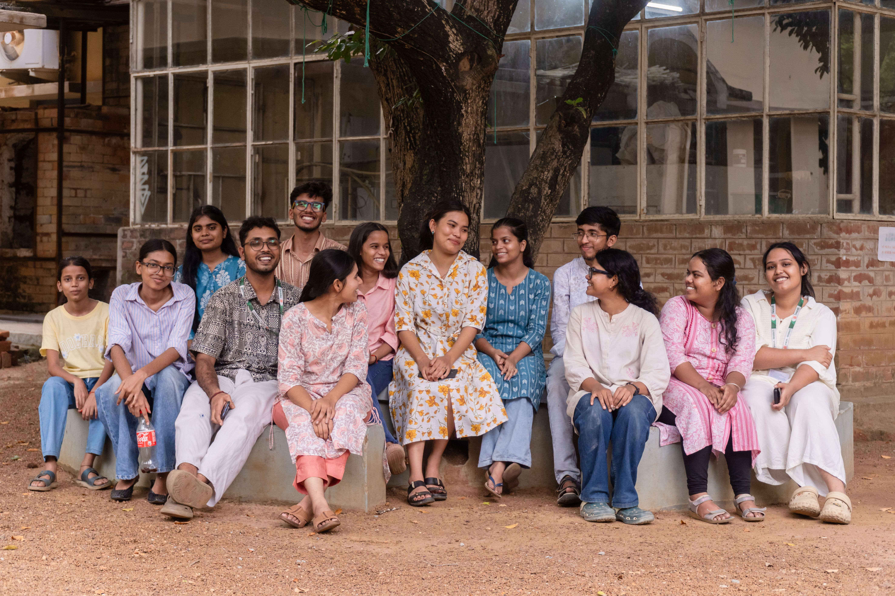
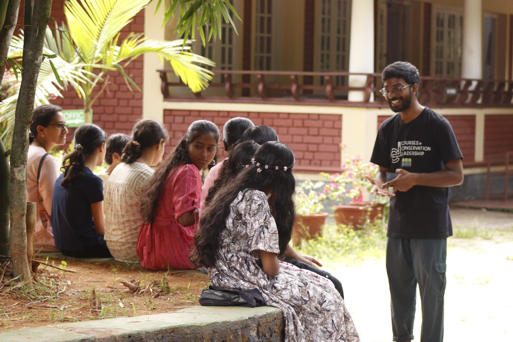

Fieldwork & Habitat Restoration
Participate in biodiversity surveys, habitat monitoring, restoration activities, and conservation initiatives.
Turn your passion for biodiversity, ecology, and conservation into meaningful action. Join a community working to protect nature, support research, and inspire environmental awareness.
Join Us as a VolunteerMake a difference

Tropical Biodiversity Action and Research Centre (TBARC India) welcomes enthusiastic volunteers who want to contribute their time, skills, and ideas to biodiversity conservation, ecological research, and environmental education. Whether you enjoy fieldwork, working with data, designing creative content, capturing stories through photos and videos, or engaging communities, you can help make a difference.
Find your role
Choose an area that matches your interests, skills, and availability.
Participate in biodiversity surveys, habitat monitoring, restoration activities, and conservation initiatives.
Assist with ecological research, biodiversity documentation, data collection, organisation, and analysis.
Create awareness campaigns, posters, infographics, and engaging digital content for conservation.
Capture plants, wildlife, habitats, field activities, and stories that bring biodiversity to life.
Support biodiversity education programmes, workshops, learning resources, and environmental campaigns.
Help organise webinars, workshops, outreach programmes, and community-based conservation activities.
Contribute articles, blogs, reports, and educational resources on biodiversity and ecology.
Grow while giving back
Your contribution supports nature conservation while helping you build skills and experience.
Everyone can contribute
We welcome undergraduate and postgraduate students, research scholars, early-career professionals, photographers, designers, writers, nature enthusiasts, and anyone interested in biodiversity and conservation. You do not need to be an expert to get started. Your enthusiasm, willingness to learn, creativity, and commitment to nature are what matter most.

Every contribution counts. Whether you support research, join field activities, create content, or help spread awareness, your involvement can make a difference. Join TBARC India and turn your passion for nature into action.
Apply to Volunteer